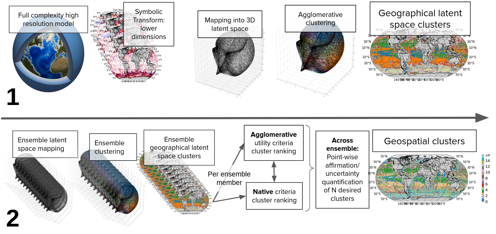

About
Algorithms to determine regions of interest in large or highly complex and nonlinear data is becoming increasingly important. Novel methodologies from computer science and dynamical systems are well placed as analysis tools, but are underdeveloped for applications within the Earth sciences, and many produce misleading results. NEMI is able to quantify and leverage the highly complex latent space presented by noisy, nonlinear and unbalanced data common in the Earth sciences. NEMI uses dynamical systems and probability theory to strengthen associations, simplifying covariance structures, within the data with a manifold, or a Riemannian, methodology that uses domain specific charting of the underlying space. On the manifold, an agglomerative clustering methodology is applied to isolate the now observable areas of interest. The construction of the manifold introduces a stochastic component which is beneficial to the analysis as it enables latent space regularization. NEMI uses an ensemble methodology to quantify the sensitivity of the results noise. The areas of interest, or clusters, are sorted within individual ensemble members and co-located across the set. A metric such as a majority vote, entropy, or similar the quantifies if a data point within the original data belongs to a certain cluster. NEMI is clustering method agnostic, but the use of an agglomerative methodology and sorting in the described case study allows a filtering, or nesting, of clusters to tailor to a desired application.
{kind=link}
Figure: Sketch of NEMI workflow. Part 1 (top row) illustrates moving from the data in its rew form, through initial symbolic renditioning, manifold transformation and clustering. Part 2 (bottom row) shows the ensembling, agglomerative utility ranking and native (field specific) utility ranking within each ensemble member. Finally, the cluster for each location is determined looking across the ensemble. (Top left image of model adapted from encyclopedie-environnement.org).